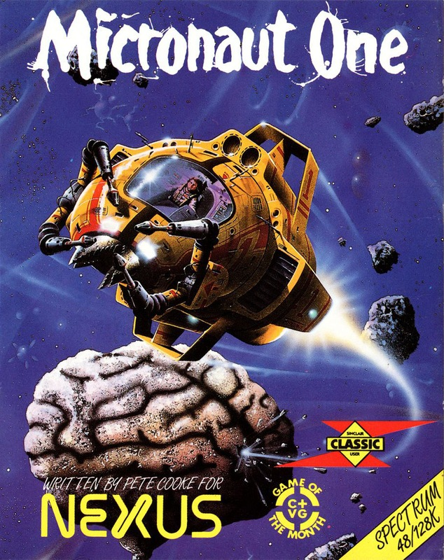
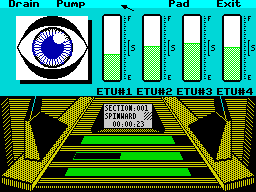
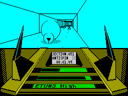
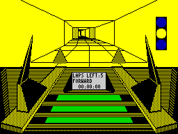

Micronaut One


{kind=link}

| Publisher: | Nexus |
| Price: | £9.95 |
| Year: | 1987 |
| Source: | CRASH, Issue 43 |

As a member of the Guild of Equalisers, you control a ship passing through the tunnel network of a biocomputer. The passageways are infested with Scrim — mutated fly-like predators, thriving on the computer’s warmth and energy. Their eggs hatch into larvae and develop into web-spinning adult Jellyflies.
Your craft can be guided along an intricate network of rectangular tunnelling, punctuated by junctions and projections, all shown on a split screen.

A map of the tunnels can be called up, with your position shown. And you can set up markers as homing points for the ship’s Navigational Locking System.
The vehicle can move to avoid obstacles, take alternative routes, and stalk Scrim. Collisions cause interference on the viewing screen, and directional changes are indicated on a central window in terms of spin. You can only reverse when you hit an obstacle.
Your craft is equipped with a targetable weapons system which throws forward energy tendrils. Killing parasitic Scrim may require persistent firing — and exhaust your energy. Passing through a nebulous energy swarm restores it, though.

Cooke’s Micronaut One
And the craft’s energy must be kept within a narrow range. Energy can be transferred to and from the craft by docking at any of four Cyclopean stations, protected by periodically closing translucent doors. At each of these, energy can be pumped into or drained from the vehicle’s corresponding Energy Transfer Units (ETUs). At a safe level the energy bar is green, otherwise it’s red.
If the energy level goes way beyond the limits — as it does if the craft is blocked in by Scrim webbing — the whole biocomputer complex could face explosive consequences.
When all the Scrim on a level have been destroyed, the craft is automatically transported to the next — and worse infestation. Information on all alien life forms and the biocomputer can be accessed.
And you can always cop out — by leaving the creature-infested passages and simply competing against time in a five-lap race through the tunnels. A pacer provides additional motivation.
CRITICISM

“Pete Cooke’s works have been definitive landmarks of innovation, and Micronaut One follows suit. It’s not exactly a complex game, but it is involving. The inlay sets the scene beautifully and explains the myriad of options. The tunnels appear very solid because of the mixture of masked vector graphics and the occasional wall. And perspective has been used well: not only do the Scrim move forward and backward in perspective but also, if the angle of view is changed vertically, the perspective changes accordingly. The only letdown is the sparse sound. The Tau Ceti duo were, I felt, too open visually, provoking a sense of ‘what do I do next?’. But Micronaut is my sort of game — enthralling, exciting and highly playable.”
RICKY
“Wow! Micronaut One is really attractive — and there’s a full, polished, and thoroughly enjoyable game lurking under the smooth and fast vectors. The race subgame is a nice distraction, and supplements the full game well. The front end is polished to the point of being shiny; the vast array of options are all easily accessible from the superb select system; and it’s obvious Pete Cooke has paid attention and time to all the tiny little details which make a good game seem great.”
MIKE
“Pete Cooke has always produced first-class games, so I loaded Micronaut One in anticipation. The loading screen is a letdown — but the rest is fantastic. Graphically, Micronaut One is a smoother-moving, better-presented version of the 3-D tunnel game Zig Zag (an ancient hit by DK Tronics — CRASH Issue Five, June 1984). Gameplay is fast and furious, and the huge playing area features complex maps (one designed by yours truly...) so hours of fun can be had just exploring. Micronaut One can be a bit hard to get into, but perseverance and the inclusion of the simple race game more than make up for this. Pete Cooke has another hit on his hands, and no self-respecting games player should be without it.”
ROBIN
COMMENTS
| Control keys: | Definable |
| Joystick: | Kempston, Sinclair, Cursor |
| Use of colour: | Monochromatic — but you can choose the ink colour |
| Graphics: | Excellent vectors and a good score line |
| Sound: | Limited spot FX |
| Skill levels: | Two separate games: one easy, one very difficult |
| General rating: | Original, visually stunning, very playable and addictive |
| Presentation: | 96% |
| Graphics: | 91% |
| Playability: | 89% |
| Addictive qualities: | 93% |
| Overall: | 92% |